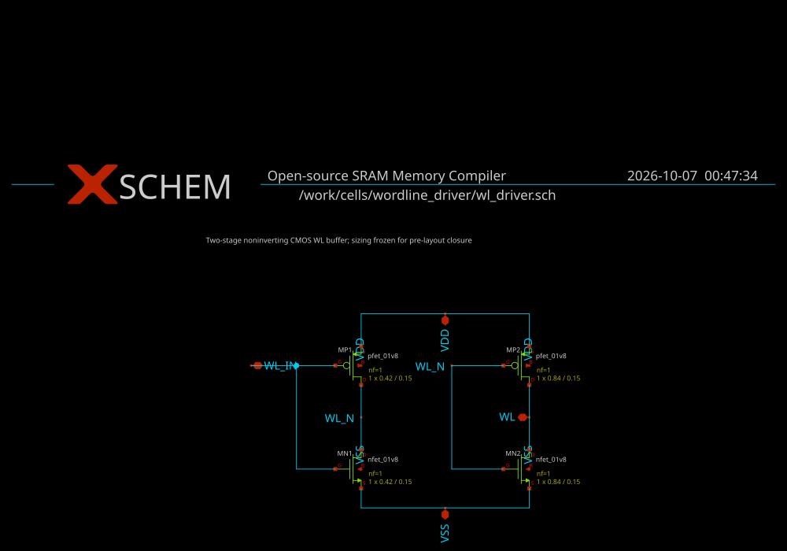
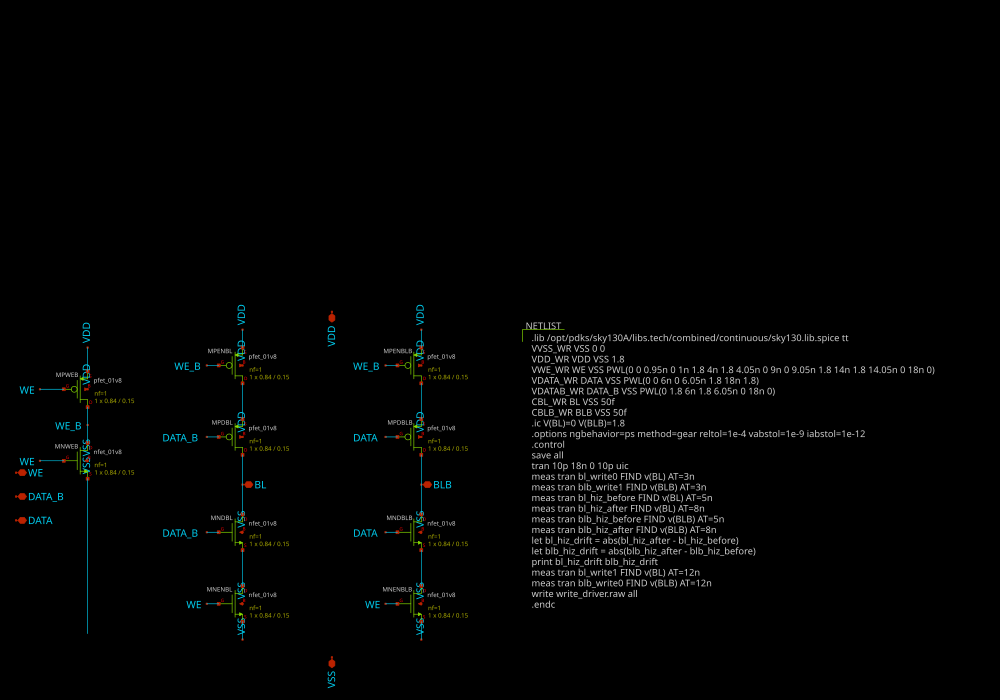
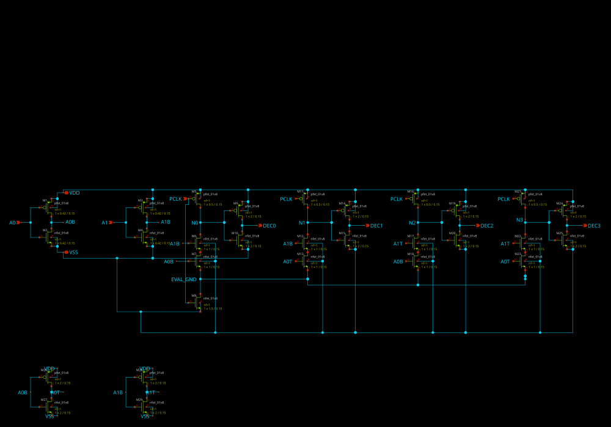
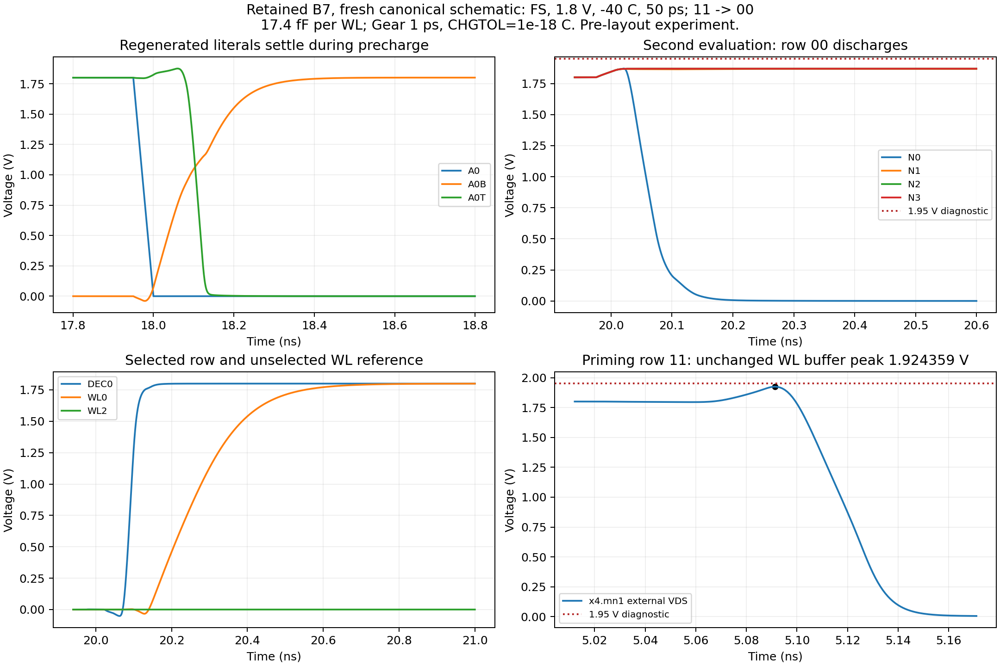
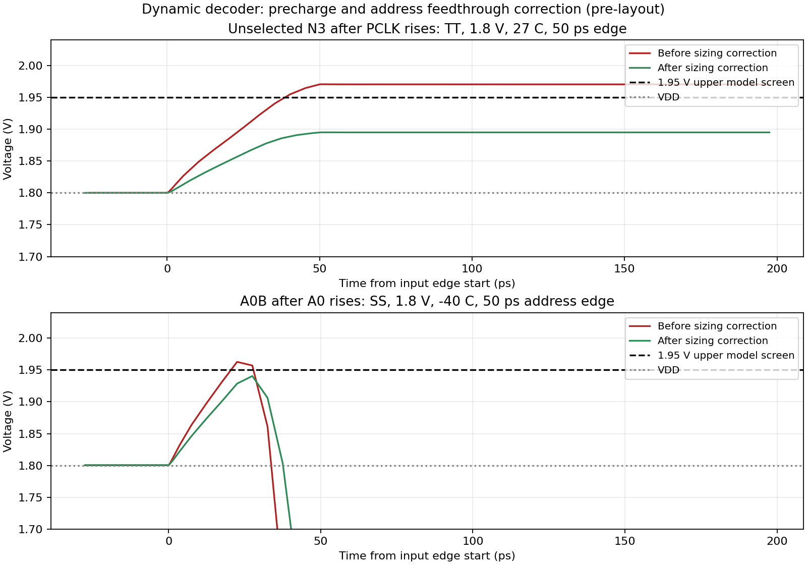
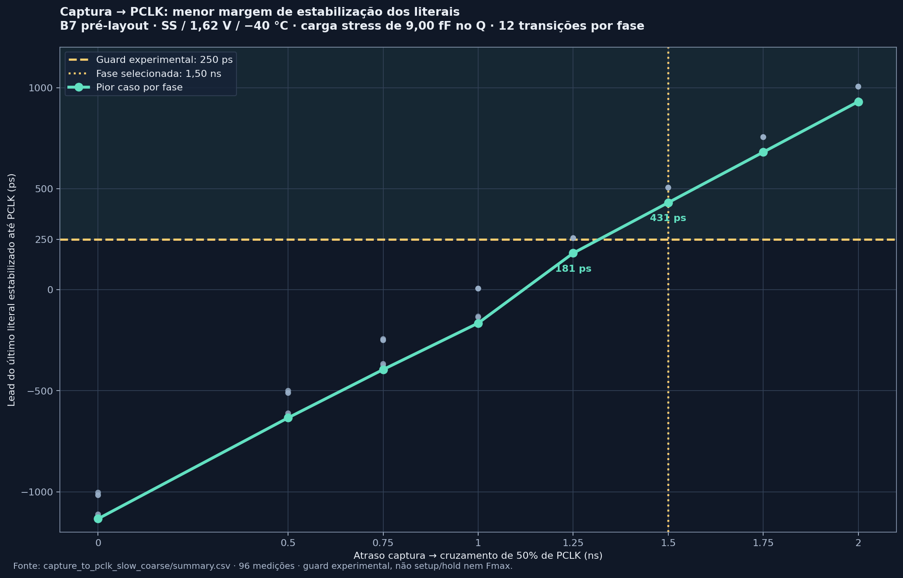

Andamento
da Fase 1
Decoder dinâmico de linha, wordline driver e write driver. Este resumo reúne esquemas, resultados medidos e próximos passos da branch feature/peripherals.
Os resultados e as pendências têm links para os esquemas, relatórios e dados de origem no repositório.
Escopo
Na SRAM inicial 4×8, os endereços capturados selecionam uma das quatro linhas. Este trabalho cobre o decoder dinâmico, o buffer de wordline e o write driver diferencial.
Row decoder
Lógica dinâmica de pré-carga e avaliação, com uma saída DEC selecionada por endereço.
Wordline driver
Buffer CMOS não inversor entre DEC e a capacitância da linha.
Write driver
Acionamento complementar de BL e BLB conforme DATA e WE.
A especificação determina o decoder dinâmico; a estratégia para decoders maiores continua como decisão futura da equipe.
Wordline driver — simulação e layout
Buffer CMOS não inversor de dois estágios, com larguras de 0,42 µm e 0,84 µm e L=0,15 µm. A resposta foi simulada com a carga estimada da linha e com uma carga de stress.
| Carga | Atraso máximo esquemático | Atraso máximo PEX | Canto limitante |
|---|---|---|---|
| 17,4 fF estimados | 0,291 ns | 0,386 ns | SS, 1,62 V, −40 °C |
| 50 fF stress | 0,665 ns | 0,760 ns | SS, 1,62 V, −40 °C |

LVS: match único, com 4 MOS e 5 redes. O PEX atual representa a folha e não inclui a linha física completa.
Fonte: registro de validação · CSV PVT
Write driver — operação complementar
Write 0 · 3 ns
BLB: 1,800297 V.
Write 1 · 12 ns
BLB: aproximadamente 0 V.
Durante o intervalo desabilitado, o drift medido foi de 3,39 mV em BL e 1,46 mV em BLB. O deck não define um limite de aceitação para esse valor.

LVS: match único, com 10 MOS e 12 redes. A especificação ainda não define um limite máximo para a capacitância efetiva.
Ceff no estado desligado: 1,02–4,03 fF na folha e 14,11–26,72 fF no PEX existente. A verificação integrada com bitcell e precharge ainda está pendente.
Fonte: registro de validação · CSV PVT
Decoder B7 - evidencia historica
O dimensionamento atual mudou durante o fechamento de layout. Os 264 casos e as imagens B7 abaixo pertencem ao fonte anterior; requerem requalificacao para o fonte atual.
O endereço é pré-decodificado por inversores; os nós dinâmicos são pré-carregados e depois avaliados. O B7 acrescenta buffers estáticos para regenerar os literais e reduzir as excursões elétricas observadas nos candidatos anteriores.
- Arquitetura dinâmica 2→4 e interface de nove pinos.
- 29 MOS no decoder B7; quatro buffers WL acrescentam 16 MOS.
- Os testes consideram o clock-to-Q do registrador pelas tabelas Liberty SKY130, sem assumir chegada instantânea do endereço.
Dimensões B7: regeneradores M26–M29 com W=2 µm; pré-carga 0,5 µm; footer 1,5 µm; inversores de saída 2 µm; stacks 1 µm; inversores de endereço 0,42 µm; L=0,15 µm.






Fonte: caracterização B7 · correção de feedthrough
Revisão anterior: DRC/LVS e matriz crítica aprovados
Este slide registra a geometria e a extração de 7ad0348. O layout compacto foi extraído e simulado depois; a matriz atual está resumida no slide seguinte e no handoff da compactação.
Roteamento agrupado, canal central e trilhas limitadas aos pontos de conexao. Inversores de endereco: 0,84 um; precharge: 1,25 um; stacks: 2 um; PFETs de saida: 3 um.
SS / 1,62 V / -40 C: pior WL a 90% em 943,617 ps e precharge a 10% em 899,474 ps. O limite de 1 ns permanece; zero alertas nos dois criterios experimentais de 1,95 V.
Escopo: nove casos TT e quatro SS, WL buffers esquematicos e carga estimada de 17,4 fF. Carga fisica, qualificacao ampla, captura/PCLK e confiabilidade permanecem pendentes. Energia de fontes ideais tem avaliacao numerica separada.
Fluxo e reproducao · Comparacao historica a 1 ps · Registro historico
Matrizes completas em TT, SS e FF
Os 16 pares ordenados de endereço passaram no baseline e no PEX compacto em TT, SS e FF, nos passos de 5 ps e 1 ps. O PEX R-C atual foi mantido com o mesmo hash; não foi necessária nova extração para estas simulações.
| Métrica máxima, passo 1 ps | Esquemático | PEX compacto |
|---|---|---|
| WL até 90% | 394,006 ps | 492,795 ps |
| Pré-carga da WL até 10% | 306,280 ps | 461,940 ps |
| Magnitude terminal observada | 1,949037 V | 1,878690 V |
O ngspice emitiu avisos nos modelos FF. O check BSIM4 limita A2 a 1 e define A1=0 quando A2>1; para Eta0, Pdibl1 e Pdibl2 negativos, essa rotina apenas avisa. Não houve erros fatais, mas a aceitação final desses parâmetros ainda requer revisão do responsável pelo modelo/PDK. O pico VGD de 1,949037 V fica próximo da tela numérica do runner; isso não mede diretamente as faixas assinadas do PDK.
A análise assinada das formas de onda FF/SS encontrou excursões de VGS fora das faixas publicadas sob a convenção de fonte efetiva usada no relatório. Isso não indica falha lógica por si só, mas deixa a qualificação do modelo em aberto. Um caso FF com ponto de operação removeu a grande excursão inicial de VBS observada com UIC; a matriz completa nos três cantos ainda precisa ser executada e revisada.
Os casos refinados a 0,5 ps ficaram a menos de 0,89% (baseline) e 0,51% (PEX) dos valores a 1 ps. Esse resultado apoia 1 ps como referência para os pares registrados, sem ser uma matriz completa a 0,5 ps nem medir a dissipação de um driver PCLK físico. O bench usa buffers WL esquemáticos e carga estimada de 17,4 fF. Relatório FF · Auditoria de bias assinado · Auditoria SS · Auditoria de energia · Auditoria FF.
Evidencia historica: repetir esta campanha de captura/fanout para o dimensionamento atual do decoder.
Captura → PCLK — margem de estabilização
Clock-to-Q e tempos de transição do flip-flop dfxtp_1 da Liberty SKY130 foram usados para gerar rampas PWL de endereço. A simulação do decoder B7 com modelos MOS contínuos avaliou diferentes atrasos entre a captura e PCLK.
| Fase de PCLK | Lead interno mínimo | Guard de 250 ps | Resultado |
|---|---|---|---|
| 1,25 ns | 181 ps | Não: 5/12 passam | Margem insuficiente |
| 1,50 ns | 431 ps | Sim: 12/12 passam | Recomendado |

Com captura em 15 ns e queda de CLK em 20 ns, a fase alta de PCLK é 3,5 ns; o atraso máximo até WL atingir 90% foi 675,44 ps. A carga WL ficou em 17,4 fF; 3,43 fF e 9,00 fF são cargas Liberty na saída Q do registrador.
O guard é um critério experimental. Q foi modelado com rampas baseadas em Liberty e PCLK permaneceu ideal. Setup/hold externo, metastabilidade, gerador real de PCLK, carga Q extraída, carga WL de 50 fF e Fmax ainda não foram fechados. Resultados adicionais: TT/FF a 1,50 ns e SS nominal a 1,50 ns.
O que está concluído e o que falta
Concluído nas folhas WL e write
- Simulações esquemáticas e com PEX existente.
- DRC sem violações e LVS com match único nas duas folhas.
- Ambiente SKY130A reproduzível via
tools/sram-eda.
Pendente na qualificacao e integracao
- Completar matriz com ponto de operação e revisar as excursões assinadas de VGS e os avisos do modelo.
- Repetir qualificacao ampla e captura/PCLK para o decoder atual.
- Validar consumo com driver e fonte real de PCLK.
- Conectar decoder, quatro WL drivers e a linha fisica com carga extraída.
- Executar escrita integrada com bitcell e precharge.
Integração: a tentativa de leitura parou durante a geração do netlist do precharge, antes do ngspice. A retomada depende de uma versão que gere netlist válida e de uma nova execução integrada com André.
Evidências de DRC/LVS e da tentativa de integração.
Plano de fechamento
| Data | Tarefa | Evidência de saída |
|---|---|---|
| 08/10 | Requalificar captura/fanout e a interface PCLK | Orcamento medido para o novo dimensionamento |
| 09/10 | Repetir qualificacao ampla, ruido e retencao | Fonte atual e limites explicitamente registrados |
| 10/10 | Revisar margens e energia com fonte real de PCLK | Compactação com DRC/LVS e PEX; matrizes TT/SS/FF completas; revisão de avisos FF e convergência numérica PCLK registrada |
| 11/10 | Validar carga física da linha e escrita integrada | Dec→WL→bitcell; write 0/1 e readback |
| 12/10 | Revisar interfaces e reproduzir o fluxo | Checks integrados com estados, fases e rails explícitos |
| 13/10 | Organizar a entrega da Fase 1 | Artefatos, evidências reproduzíveis e pendências registradas |
Dependências: definição da origem de PCLK; versão válida do precharge com André; interface e carga física do bitcell com Danilo.
Plano detalhado: tarefas restantes. Use ←/→ ou os botões para navegar; a impressão gera uma página por slide.